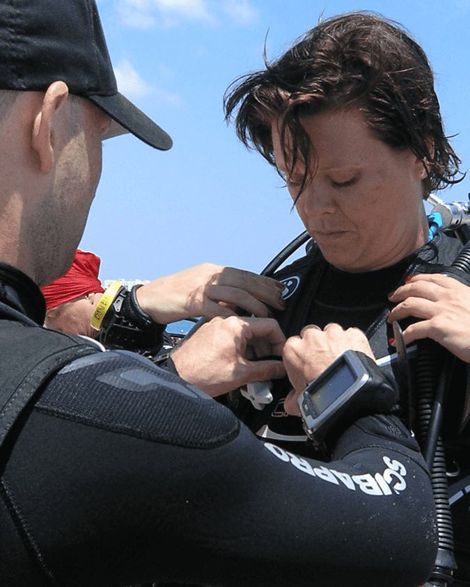
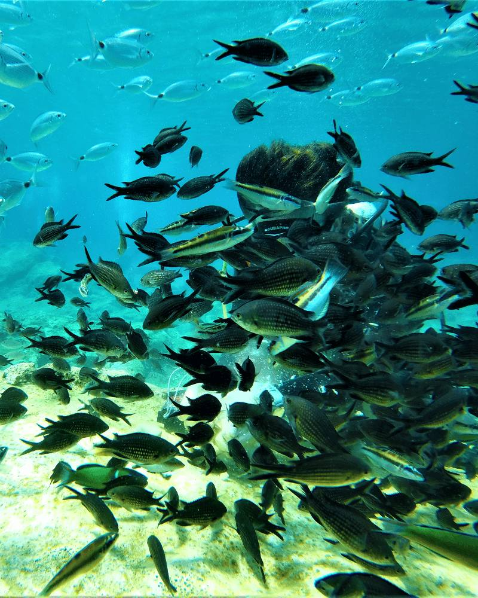
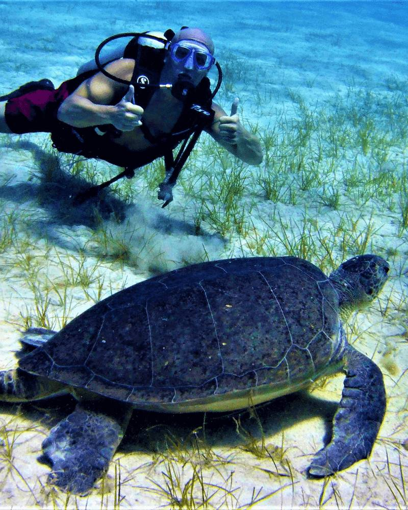
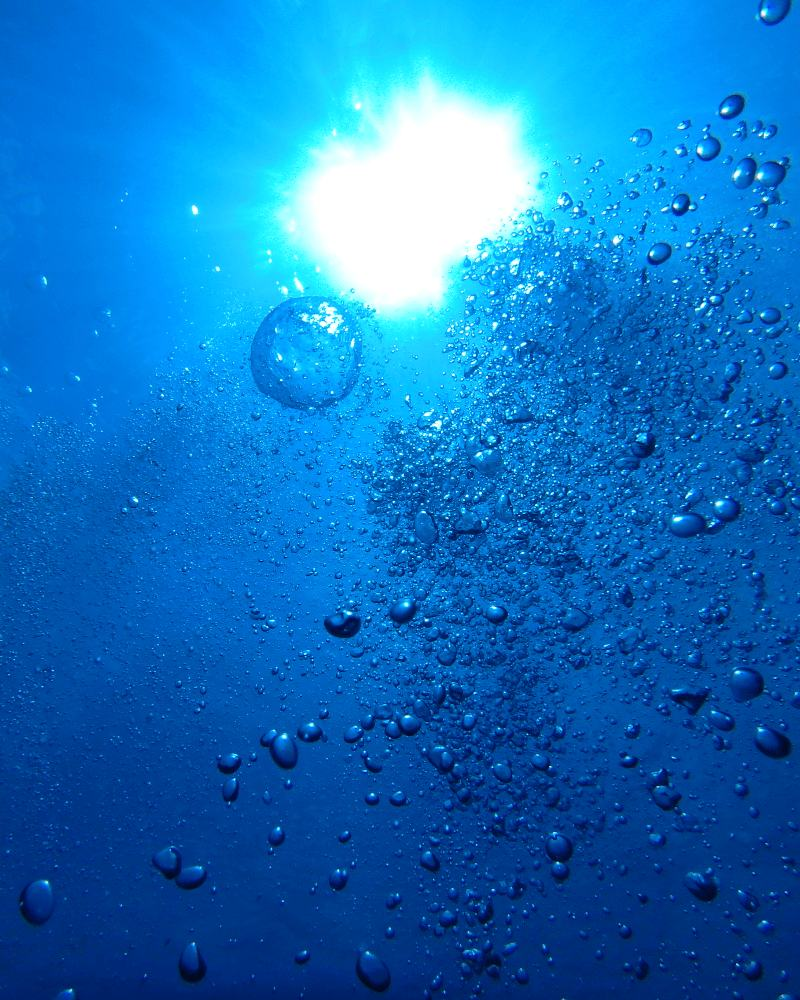

0 m Try Diving
Your first dive starts here
PADI Discover Scuba Diving
A quick introduction to diving, offered twice daily near Cavo Greko. We have been taking first-timers underwater since 1982.
- 3 hrsabout, from start to finish
- 10 mmaximum depth

Step by step
Four steps, each a little deeper
About 3 hours in total, always with a qualified instructor.
You start on dry land and finish on a real dive, one unhurried step at a time.
-
On land
Step 1
Briefing
We begin on dry land. Your instructor talks you through the session and what to expect underwater, and takes the time to answer your questions.
-
Kit up
Step 2
Equipment and hand signals
Next you get to know the equipment you will be wearing and learn the hand signals divers use to talk to each other below the surface.
-
Shallows
Step 3
Skills in shallow water
In shallow water you practise a few skills with your instructor beside you. There is no rush: this is where breathing underwater starts to feel normal.
-
max 10 m
Step 4
The dive
Now for the part you came for. You head out with your instructor on a dive to a maximum of 10 metres, and see the sea from the inside.
On the dive
A first look at the world below
No two dives are the same, which is half the fun. Here is a taste of what a first one can bring.



Who can join
Open to all ages
Discover Scuba Diving is open to all ages, so it is an easy adventure to share with family and friends.
For younger divers
Bubblemaker, from age 8
Children from 8 can join the Bubblemaker programme, so the youngest in the family do not have to miss out.
Not sure which is right for you or your children? Ask us and we will point you the right way.
Ask about Bubblemaker
What next
Want to keep going?
Discover Scuba Diving is not a certification, but it is the first step towards one.
If you continue to a course, it counts as your first training dive. So the day you decide you want more, you have already made a start.
Twice daily near Cavo Greko
Ready to take the plunge?
Tell us when you are in Ayia Napa and we will find a time for your first dive.